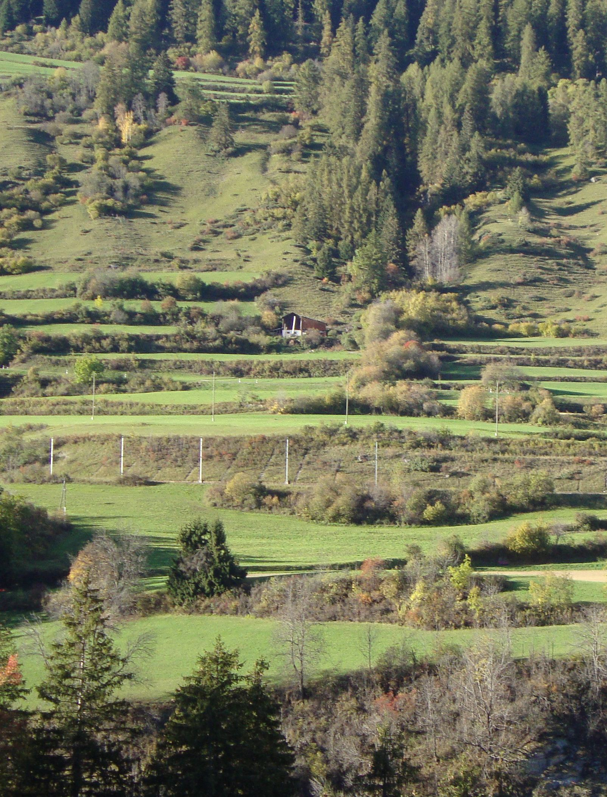

Terraced landscapes in Switzerland – an exploratory survey of their occurrence and characteristics
Affiliations
- 1 Stiftung Landschaftsschutz Schweiz
The Journal of Terraced Landscapes volume 2, issue 1, pp. 74–103 (2026) · Cite this article
- 157 views
- 95 downloads
- DOI10.5281/zenodo.18486656

Abstract
Terraced landscapes are one of Switzerland’s characteristic cultural landscapes, but until now there has been no spatially explicit cartographic representation or characterisation of them. We have taken on this challenge. In this article, we primarily describe our methodological approach and the challenges it presents. Secondly, we illustrate the approach and analyses using maps of the areas, types, use and condition of Switzerland’s terraced landscapes. We show that a combination of an inventory based on literature, the modelling of potential terraced areas, and a visual mapping based on map data has the potential to capture terraced landscapes as comprehensively as possible. However, some uncertainties remain, partly due to limited resources and computing power, but also due to the pending and very labour-intensive verification in the field.
Keywords
- Terraced landscapes
- inventory
- GIS-based modelling
- Switzerland
Terraced landscapes are one of Switzerland’s characteristic cultural landscapes (Rodewald et al. 2014). They are characterised by a variety of qualities such as high structural diversity, which has been created and is continuously reproduced as a result of human activity in terms of structures (e.g. dry-stone walls, embankments), use (e.g. vineyards, fields, meadows) and cultural specifities (e.g. architectural styles, materials, organisation). The great importance of terraced landscapes for farming, but also for identity formation, recreation, art and culture, and the preservation of biodiversity, means that there is also a great responsibility to preserve such landscapes.
In this sense, the following concerns are central: recognising the diverse qualities of terraced landscapes and raising awareness of them, supporting the concrete use of terraces, (international) networking among stakeholders who have taken up the issue, and promoting rehabilitation measures, such as the restoration of dry-stone walls. An important basis for all these projects is a solid knowledge of the occurrence of terraced landscapes in Switzerland.
With regard to the latter, the Swiss Proterra project (Lingeri et al. 2007; Rodewald 2007) identified 76 larger terraced landscapes in Switzerland and their characteristics. Building on this, the inventory was supplemented and cartographically mapped in a continuous follow-up project (Liechti & Rodewald 2020). The mapping took the form of dot markings, with the size of the dots indicating the type and extent of the terraced landscape and the colouring indicating the type of cultivation. What was not available until now was a systematic survey of terraced areas throughout Switzerland, i.e. a spatially explicit cartographic mapping and characterisation of existing terraced landscapes. We have taken on this challenge.
In this article, we describe our methodological approach to the systematic survey of Switzerland’s terraced landscapes and discuss the challenges that arose in the course of this methodological work. The aim is to engage in dialogue with similar projects in other countries, particularly in connection with the International Terraced Landscapes Alliance (ITLA), which has set itself the task of developing a global database. We also present a few selected content analyses, which should be understood as illustrations of the methodological approach. Concrete verification of the results in the field is still pending. Within the framework of the methodological approach presented here, we were therefore guided by the following research questions: Where are the terraced landscapes of Switzerland located (geographical question) and what approach is suitable for documenting them (methodological question)? How can the terraced landscapes of Switzerland be characterised (content-related question)? What challenges arise from the methodological approach and what are the next steps to be taken (procedural question)?
2. Basics
2.1. Definition of terraced landscapes
A terraced landscape as defined by Lingeri et al. (2007) is a cultural landscape characterised by man-made terraced areas (German: Terrassenfluren). Terraces, in turn, are sequences of slopes, usually in the form of (dry) stone walls or (wooded) embankments, and terraced surfaces that are or were cultivated in a variety of ways. Terraced landscapes developed over centuries in response to increasing land scarcity driven by population growth. They offered a low-erosion, resource-conserving and favourable method of cultivating slopes (Lingeri et al., 2007).
In line with the typology developed by Lingeri et al. (2007), we distinguish between three types of terraced landscapes: Type I consists of large-scale, uniformly used and compact-looking terraced landscapes, usually covering an area of more than 100 ha. Type II resembles a mosaic of terraced areas amidst other landscape elements that are linked by cultural-historical, usage-related and natural spatial similarities. Normally, at least one larger terraced area is present. Type III, on the other hand, are terraced landscapes with scattered, small-scale terraced areas that are perceived as individual landscape elements but form a terraced landscape due to similar cultural-historical and natural spatial aspects (Lingeri et al. 2007; Liechti & Rodewald 2020). As our goal was to survey as many terraces in Switzerland as possible, the term “terraced landscape” was defined rather broadly. In a first step, all terraced areas were mapped, regardless of their assignment to a higher-level terrace landscape. Based on municipal and natural spatial boundaries, the terraced areas were then aggregated into type II or III terraced landscapes. Individual terraced areas that could not be connected were designated as individual type III areas and will have to be reviewed and, if necessary, removed from the inventory in the course of further work and validation, as they do indeed constitute a terraced area as such, but cannot be defined as a terraced landscape according to our types.
2.2. State of research
Over the years, various methodological approaches have been developed for the GISbased detection of terraced landscapes. These methods are based on high-resolution digital terrain models (DTMs), satellite images and remote sensing data such as LiDAR (cf. Sofia et al., 2016; Godone et al., 2018; Capolupo et al., 2018; Cao et al., 2021; Lu et al., 2023).
The study by Sofia et al. (2016) investigated how the results differ when the digital elevation model (DEM) is created based on satellite data or by means of LiDAR aerial surveying. It was found that DEMs based on satellite images achieve a detection rate of around 80%, while LiDAR-based DEMs exceed this value. However, aerial surveys limit the size of the study area. The characteristics of the terraces, particularly the height of the terrace edges, are also decisive for the detection rate. Prominent terrace edges with a height of more than two metres significantly improve detection. The optimal method and data basis should therefore be tailored to the size of the study area, the characteristics of the terraces and the available resources.
The study by Godone et al. (2018) confirmed that LiDAR data is a suitable method for detecting overgrown terraces, especially in densely vegetated areas. In their study, the study area was specifically flown over to create a LiDAR-based DEM. The same approach was also used in the study by Capolupo et al. (2018), which additionally used historical aerial photographs to document changes in terrace structure over time. As the aim of our study was to create a national inventory, it should be based on nationally harmonised geodata. The methodological comparison helped us to base our work on the most suitable geodata from the Federal Office of Topography Swisstopo. However, the data basis is only one component of the GIS-supported approach. The processing of terrain, satellite and remote sensing data collected in the field can be based on various topographical features and filters.
One of these features is slope inclination and its variability. Capolupo et al. (2018) processed the data on the assumption that natural areas can be distinguished by their high variability from terraced areas. Terraced areas have a regular structure and, as a result, a lower degree of variability (p. 803f). Object-based image analysis (OBIA) was used to divide the study area into terraced and non-terraced areas.
The study by Sofia et al. (2014) is also based on the same principle of variability. Slope Local Length of Auto-Correlation (SLLAC) is a morphological indicator that distinguishes terraced landscapes from the surrounding natural landscape due to their regular and less variable structure. However, the detection rate depends heavily on the morphology of the area, the minimum height of the terrace slope and the area covered by the terraces in a given area and therefore does not appear to be stable enough to reliably detect terraced landscapes in the heterogeneous landscapes of the Swiss Plateau, the Jura and the Alps. In the study by Dai et al. (2019), terrace detection was based on their edges, which were extracted using an edge detection operator, the so-called Canny Edge Detector, and highresolution satellite images. First, the contour direction of the terrace edge was determined using the digital elevation model, at a 90° angle to the flow direction. Edges in this direction were then coded as possible terrace edges.
Due to the heterogeneous topographical conditions in Switzerland and the diversity of terraced landscapes in terms of their cultivation (vineyard and arable terraces, chestnut groves, pastures and meadows) and the type of terrace slope (dry stone wall, grass slope, hedges/bushes), it was concluded that it would be extremely difficult to ensure good quality detection throughout Switzerland. In addition, an automated procedure for detecting terrace structures would be extremely computationally intensive and could not be guaranteed due to the limited IT structure. It was also clear from the outset of the project that the detected structures would require manual post-processing anyway. These had to be aggregated into meaningful terraced landscapes and other characteristics, such as slope type, had to be recorded where possible. The procedure chosen on the basis of these requirements is described in the following chapter.
3. Steps for Surveying and Characterising the Terraced Landscapes
The procedure for answering our research questions is divided into the following steps: literature research, database construction, mapping and verification based on topography, modelling of the potential terraced areas, and data analysis based on the compiled inventory and the potential terraced areas.
3.1. Literature research
The work was based on research into existing literature on landscapes and, in particular, terraced landscapes in Switzerland. This included scientific literature, planning instruments at cantonal and regional level such as structure plans (German: Richtpläne), landscape development concepts, landscape inventories and landscape quality projects, as well as regional publications such as illustrated books and local history books. For example, it was found that the cantonal structure plans in 5 of 26 cantons contain entries on terraced landscapes. The information obtained was compared with the existing inventory (Lingeri et al. 2007; Liechti & Rodewald 2020) and the inventory was supplemented accordingly with the missing terraced landscapes. The list of all known terraced landscapes, sorted by canton, formed the basis for the subsequent entry into a database.
3.2. Database structure, mapping and verification
QGIS software version 3.22.14 was used to build a database of Switzerland’s terraced landscapes based on the supplemented inventory. As a first step, a multi-polygon layer was created to record the terraced landscapes with predefined attributes and domains in order to ensure uniform recording. The QGIS project file was then supplemented with various map services from the Federal Office of Topography Swisstopo, which could then be used to precisely delineate the terraced landscapes.
The maps integrated from Swisstopo are various base maps, such as national maps, orthophotos, topological and terrain maps. The SwissALTI3D (Swisstopo, 2022a), SwissSURFACE3D (Swisstopo, 2021a) and SWISSIMAGE (Swisstopo, 2022b) models were particularly important for mapping and delineating the terraced landscapes. These were integrated into the GIS via the Web Mapping Service of the Federal Geodata Infrastructure (WMS-BGDI) (Swisstopo, 2021b). SwissALTI3D is a high-resolution terrain model with a spatial resolution of 0.5 m. It depicts the terrain of Switzerland without vegetation and buildings (Swisstopo, 2022a). The SwissSURFACE3D model is based on LiDAR data and depicts the surface of Switzerland with all natural and artificial elements (Swisstopo, 2021). The orthophoto that was used is the SWISSIMAGE product with a spatial resolution of 10 cm (Swisstopo, 2022b).
In addition, the vector data sets “cantonal boundaries” and “municipal boundaries” and the raster data set “BLN”, which contains the areas of the Federal Inventory of Landscapes and Natural Monuments, were integrated. This served as a source of detailed information on the landscape, its qualities and history, but also on its protection under the Ordinance on the Federal Inventory of Landscapes and Natural Monuments (VBLN). Thanks to the cantonal boundaries, the correct cantonal abbreviation could be assigned to the recorded landscapes. The municipal boundaries were helpful in assigning a suitable name to the terraced landscapes, which was mostly based on the names of the municipalities. Information on land cover was integrated via the SwissTLM3D topographic landscape model (Swisstopo, 2024a).
The individual terraces in the supplemented inventory were recorded as (multi-)polygons and each recorded terraced landscape was assigned a type (I, II or III; according to Lingeri et al. 2007). The dominant use of the terraced areas and any secondary forms of use were recorded as primary, secondary and tertiary uses. Depending on the crop rotation, some terraces are used alternately as meadows and for arable farming. In order to take this form of use into account as well, information from the sectoral plan for crop rotation areas (Federal Office for Spatial Development ARE, 2020) and the associated geodata were consulted (KGK-CGC, 2025b).
In order to map the terraces and distinguish between terraced and non-terraced terrain, the respective area was viewed on the “SwissALTI3D” raster map, the monodirectional topography, at a map scale of 1:4000. As the topographic map does not show any data on soil cover, forested areas were also included in the database. Terraced but overgrown areas thus only became apparent by superimposing the mapped terraced landscapes with the forest data set of the topographical landscape model of Switzerland (cf. Swisstopo, 2024) and were subjected to a more detailed analysis in a later step (cf. Chapter 4). In cases of uncertainty, the orthophoto and the national map were also used for reference. If it was not possible to clearly delineate the terraced landscapes, the lines were drawn based on landscape features such as terrain edges, hedges, watercourses, roads or settlement boundaries. The orthophoto, sometimes in combination with the national map, was used to determine the primary and, where applicable, secondary and tertiary uses. Using this approach, all known terraced landscapes in Switzerland were digitized manually and interpreted one after the other based on nationally harmonized data as described above. Subsequently, the individual cantonal areas were systematically searched for further terraces using the monodirectional topography SwissALTI3D on a scale of 1:16,000 and based on the potential terraced area analysis (see Chapter 3.3). The additional terraces discovered in this process were also included in the inventory and database and characterised.
3.3. Modelling of potential terraced areas
In order to identify areas in Switzerland where further terraced landscapes can be found, the modelling of potential terraced areas was carried out in parallel with the development of the database. To this end, the literature was searched for factors that favour the existence of terraced landscapes. The following factors proved to be essential and operationalizable for the existence of terraced landscapes: altitude (cf. Rodewald 2006: 376), proximity to settlements (cf. Spanò et al. 2018: 93ff), soil cover (cf. Eisenhut 2007), slope gradient (cf. Spanò et al. 2018: 82) and, with reservations, exposure (slope orientation). Other possible factors could not be used because either the data was not available at national level, or the analysis would have been too computationally intensive due to the large amount of data (cf. Table 1). The potential terraced areas were calculated using QGIS as well. The collection and processing of the geodata and the creation of the potential terraced areas are described as follows.
To display the slope gradient in a raster layer, the “DHM25 / 200m” data set from Swisstopo was again used as the source file (Swisstopo, 2024b). The slope can be determined using the “Slope” tool in QGIS. This was then filtered to the range between 17° and 50° using the “Raster calculator”. The raster layer for altitude is also based on the “DHM25 / 200m” elevation model (Swisstopo, 2024b). This is a digital elevation model of Switzerland with a mesh size of 200 m. Using the QGIS “Raster calculator” tool, a raster layer was created that divided the entire land area into two classes: areas with an elevation <1,900 metres above sea level were assigned a value of 1, while areas > 1,900 metres above sea level were assigned a blank value, thus extracting the potential area.
The soil cover factor was incorporated using the Swiss land use statistics (“Land Use Statistics Standard – 2018”) from the Federal Statistical Office BFS (Federal Statistical Office BFS, 2023a; Federal Statistical Office BFS, 2023b). This data set consists of a network of point vectors that categorise land use for every hectare in Switzerland. The data set was filtered using the “Extract by attribute” tool so that only the main categories 2 and 3 of the land use statistics were taken into account. This corresponds to agricultural land and forested areas. The vector points were then converted into a raster layer using “Rasterise (vector to raster)”. Finally, the values for agricultural and forested areas were set to 1 using the “Reclassify by table” tool, while all other areas were assigned an empty cell value.
To calculate proximity to settlements the “SwissTLMRegio_LandCover.shp” data set was used on the one hand, and on the other hand, the data set created on known terraced landscapes in Switzerland was accessed with the aim of determining the distance of the individual terraced fields to the nearest settlement. The settlement areas were extracted from the land use data (SwissTLMRegio_LandCover.shp) and their centre coordinates were converted into a point (according to Swisstopo, 2024a). The same procedure was carried out for the inventoried terraced landscapes. First, the terraced landscapes, which were available as multipolygons, were converted into individual polygons using the “Polygon parts to separate”-tool and then converted into points that represented the centre coordinates for each terrace. Using the “Distance Matrix” tool, each terrace field now represented as a point could be assigned to the nearest settlement in the form of a centre coordinate and the corresponding distance could be output. The most common statistical parameters and the 90th percentile of the distances were then queried from the table. In 90% of cases, the terraced areas are located within a distance of 1,389.7 m from the nearest settlement area, with a maximum of 6,655.5 m and a minimum of 9.5 m. Using the “Buffer” tool, a vector layer was created for the areas located within a radius of 1,400 m around the settlements, which was then converted into a raster layer using the “Rasterise” tool.
The exposure is also based on the DHM25 digital elevation model, with a grid cell size of 200 m (according to Swisstopo, 2024b). Using the “Perspective” tool, this model can be edited to create a grid layer that outputs the slope orientation in degrees (°) per pixel. Again, using the “Raster calculator”, a new layer was created which is limited to the range of 45°-315°, i.e. it filters out the range between north-west (315°) and north-east (45°). Using the “Align raster” tool, the five raster layers created and their technical properties, such as the raster cell size, were aligned and prepared for further calculation. The rasters were also clipped to a uniform size using the national border.
The potential area for terraced landscapes in Switzerland was generated by superimposing the grid layers developed for the individual factors and extracting the resulting intersection. The “Raster calculator” tool in QGIS was used again for this purpose. As it was not possible to determine from the literature to what extent exposure is a factor for terraced landscapes (especially for agricultural terraces), the intersection was calculated once with and once without the exposure layer (see Figure 1).
Within the potential area for terraced landscapes calculated in this way, a systematic search and analysis of the topographic data was then carried out to identify and map further terraced landscapes. This resulted in the complete inventory.
3.4. Data analysis
The starting point for the analysis is the complete inventory of terraced landscapes in Switzerland. This includes an inventory number for each terrace, the name, type, information on use (primary, secondary, tertiary use), the canton abbreviation, the area and, if available, a literature reference and any further comments.
The first step in the data analysis was to correct any geometric errors in the inventory and link it to the cantonal data using the SwissBOUNDARIES3D data set (see Swisstopo, 2023). The entire inventory was then exported as an Excel file and the number of terraced landscapes and their total area per canton were calculated using the canton abbreviation and the “COUNTIF” and “SUMIF” functions. The cantonal areas were also extracted from the SwissBOUNDARIES3D data set (according to Swisstopo, 2023) and compared with the cantonal evaluations. For the evaluations by type (I, II, III) and use, the terrace inventory was first converted into points using the “Polygon Centroids” tool, which are located at the geometric centre of the terraced landscapes. The evaluation by type was carried out in Excel using the “COUNTIF” function. The “Type” attribute in was used to prepare the centroid data set for mapping. The primary, secondary and tertiary use attributes were linked to connect the uses and symbolise them accordingly. The statistical evaluation was again carried out using Excel.
In order to record the condition of the terraced landscapes, the degree of reforestation was calculated. To this end, the data set on forest cover from the large-scale topographical landscape model swissTLM3D was used and an overlap analysis with the terrace inventory was carried out (cf. Swisstopo, 2024a). This made it possible to calculate the total reforested terrace area per canton and then to set the proportion of reforested and terraced areas in relation to the total terraced area per canton.
4. Characteristics of Terraced Landscapes in Switzerland
The initial results of the data analysis are presented below, whereby the explanations regarding areas, types, use and condition are to be understood as illustrations in function of the methodological approach.
4.1. Areas
A total of 389 terraced landscapes were inventoried across Switzerland (see Figure 2). Together, they cover an area of 39,803 ha. The largest terraced landscape covers an area of 5,764 ha and is located in the Valais, on the southern slopes of the Rhone Valley between Martigny and Leuk. The smallest terraced landscape measures just 9,155 m2 and is located in Mollis in the canton of Glarus. The mountain cantons of Valais, Graubünden and Ticino, together with the canton of Vaud, clearly have the most terraced landscapes in terms of numbers. There are 57 terraced landscapes in Valais, 55 in Graubünden, 49 in Ticino and 48 in Vaud.
Figure 3 shows the terraced areas in relation to the total area of each canton. Here, too, it is evident that particularly for the cantons of Ticino (2.54%), Valais (2.27%), Vaud (1.55%), and Graubünden (1.26%) many terraced landscapes could be mapped. However, the ratio to the canton’s total area is only a rough approximation, as the landscape, especially in the mountains, consists of a lot of unproductive areas such as rocks or glaciers.
Since vegetation capacity and a certain altitude are decisive factors for the occurrence of terraced landscapes (see Chapter 3.3), the next step was to compare the mapped areas per canton with the agricultural land area (German: Landwirtschaftliche Nutzfläche LN) (see Figure 4). To this end, the data set “Perimeter of agricultural land and summer grazing” was obtained via the “geodienste.ch” platform managed by the Conference of Cantonal Geoinformation and Cadastral Offices (KGK-CGC) (KGK-CGC, 2025a). The recorded areas were then linked using the canton abbreviation, statistically evaluated and compared to the calculated total area of terraced landscapes per canton. Once again, the proportion of terraced landscapes is highest in Graubünden (15.92%), Valais (7.94%), Ticino (5.78%) and Vaud (4.42%), which underlines the importance of these cultivation techniques for the reclamation of topographically unsuitable land and marginal yields in these cantons.
4.2. Types
A differentiation of the mapped terraced landscapes by type shows that type III terraced landscapes, i.e. terraced landscapes with scattered, small-scale terraced areas that are perceived as individual landscape elements, clearly dominate (Figure 5). Of the 389 terraced landscapes mapped, 317 were assigned to type III, 63 to type II and only 9 to type I. The key figures shown in Table 2 provide an overview of the characteristics of the three types.
4.3. Use
Depending on exposure and climatic conditions, terraced landscapes offer a wide range of cultivation conditions, which is reflected in the diversity of crops grown. The terraced landscapes mapped could thus be assigned the following uses: arable farming, pasture and meadow use, cultivation of vines, chestnuts or fruit, horticulture, as well as settlement areas and other uses as a collective term for marginal uses.
The nationwide overview of the distribution of terraced landscapes and their use shows that a large proportion of these terraced landscapes have been allocated to meadow or pasture use (211 terraced landscapes) (see Figures 6, 7 and 8). The use of terraced meadows and pastures is particularly pronounced in the cantons of Graubünden, Vaud and Valais. In terms of viticulture, a clear picture emerges of the typical wine-growing regions of Switzerland, such as the Rhone Valley (VS), Lavaux (VD), Schaffhausen (SH) and the Zurich wine county (ZH). This is the case even though only terraced vineyards are shown and not all wine-growing areas. Arable farming and chestnut cultivation are usually combined with other uses and are therefore mostly recorded as secondary uses. It is also likely that many chestnut groves have been classified as forest and have not been mapped accordingly.
A combination of primary and secondary uses was identified for 103 terraced landscapes. A combination of primary, secondary and tertiary uses was identified for 29 terraced landscapes, with this highly diversified cultivation occurring mainly in the canton of Ticino, with 21 terraced landscapes. In the other cantons, only occasional terraced landscapes with three different uses were recorded. The most common combinations of land use are: vineyards/pasture and meadow/chestnut trees (9), pasture and meadow/garden/chestnut trees (7) and pasture and meadow/vineyards/garden (4). As land use was allocated on the basis of aerial photographs, the apparent use is always a snapshot and depends on the season. An attempt was made to counteract the presumed problem of overrepresentation of meadows and pastures by combining meadows and pastures with crop rotation areas (German: Fruchtfolgefläche, FFF). Thus, all areas that were mapped as pasture and meadow on the one hand but also designated as crop rotation areas on the other, were assigned to both categories (meadow/pasture and arable farming). This resulted in a higher proportion of potential arable land. The change is exemplary for the entire Swiss Plateau, where crop rotation areas dominate (see Figure 9).
4.4. Status
The maintenance and conservation of terraces is extremely labour-intensive, which is why unproductive sites are sometimes abandoned and become overgrown. However, as the terraced structures remain visible in the geodata and have been mapped, it is possible to estimate the condition of the terraced landscapes. As Figure 10 shows, the process of reforestation appears to be particularly pronounced in Ticino, with a percentage of 27.84%. Such processes usually arise due to the abandonment of marginal locations, known as marginal yield areas. In addition to the expected canton of Valais (10.99%), the cantons of Zurich (11.27%) and Jura (13.16%) as well as the cantons in northern Switzerland in general also show a certain degree of reforestation. Uncertainties in this calculation arise from cultivation (chestnut groves are probably partly designated as forest) and uncertainties in mapping.
As a further indicator of the conservation status, an overlap analysis of the inventory with agricultural land areas (LN) was carried out (cf. KGK-CGC (2025a). These areas are reported to the cantons as actively farmed areas. As Figure 11 shows, the canton of Ticino ranks last in this evaluation with a value of 35.99%, meaning that many terraced areas are located outside the agricultural land. This could also be an indication of ongoing reforestation processes or of the cultivation of marginal land, where forest and agricultural areas are closely intertwined.
A similar analysis is based on the intersection of terraced areas with cantonal data on crop rotation areas (FFF) (according to KGK-CGC, 2025b) (Figure 12). Crop rotation areas are defined as particularly high-yielding and valuable soils for food security and are mainly located in the Swiss Plateau (Federal Office for Spatial Development ARE, 2020). The correlation between a high FFF value and a low degree of afforestation is less apparent in this analysis than in the overlap analysis with agricultural land. This is probably due to the fact that crop rotation areas are mainly located on flat terrain, as these are the most fertile areas that can be optimally cultivated. In contrast, areas where terraces are created are located on slopes or in steeper terrain. Crop rotation areas and terraced landscapes are therefore largely mutually exclusive by definition. It can therefore be assumed that the areas interpreted as terraced and overlaid by crop rotation areas are well preserved, but that it seems inappropriate to derive general statements about the state of preservation from this.
In conclusion, it should be noted that both the degree of reforestation and the overlap analyses with agricultural land and crop rotation areas can only serve as indicators. More thorough investigations require more detailed methods, such as field inspections.
4.5. Potential terraced areas
In order to evaluate the calculated potential terraced areas, an intersection or overlap analysis was carried out between the mapped terraced landscapes or the entire inventory and the calculated potential area. Similarly, each individual factor in Table 1 (altitude, proximity to settlements, soil cover, slope gradient and exposure) was examined to determine the extent to which it overlaps with the areas interpreted as terraced (see Figure 13). To this end, in a first step, all factors of the potential terraced areas according to Table 1 and the resulting potential area for terraced landscapes with and without exposure were aligned and converted into vector data sets (see Figure 13). The areas of overlap were then calculated in hectares and percentages using the “overlap analysis” tool. The results of this analysis are summarised in Table 3.
The factors “below 1,900 metres above sea level” account for 99.89% of the area mapped as terraced, 98.30% of the terraced landscapes are located near settlements, and 96.77% of the terraced area is located in the area designated for forest or agricultural use. In terms of exposure, excluding the area exposed to the north-west and north-east (315° - 45°) allowed 89.11% of terraced landscapes to be recorded. Overall, the slope gradient criterion proved to be a limiting factor in the calculation of the potential terraced area, accounting for 40.78%. One reason for this could be the coarse resolution of the data set. With a grid cell size of 200 m, many small structures of the topography are eliminated, and the topography is smoothed overall. However, due to limited processing capacities, it would have been difficult to perform the analysis based on higher-resolution data.
Proximity to settlements, location below 1,900 metres above sea level and land cover with agriculture or forest are factors that applied to almost all terraced landscapes, with the location below 1,900 metres above sea level being derived from the GIS analysis and showing a recovery rate of almost 100%. This value could also be set lower in future modelling.
The cumulative inaccuracies, mainly due to the slope gradient, add up to a value of 38.79 % or, taking exposure into account, 35.91 % of the terraced landscapes, whose location is based on the five factors examined, with the slope gradient and exposure involving a very high degree of variability and inaccuracy (see Table 3). These two factors must therefore be approximated using complex processing methods and transferred to grid cells, while proximity to settlements and land cover can be mapped using accurate vector data. Depending on the factors selected and their combination, this approach, with its limitation of the study area, appears to have considerable potential for a focused search for new terraced landscapes – also with regard to machine-supported and automated processes.
5. Conclusions and Outlook
Our survey of Switzerland’s terraced landscapes represents an important step towards a systematic inventory. It has been shown that a combination of an inventorying based on literature, the modelling of potential terraced areas, and a visual mapping based on map data has the potential to capture terraced landscapes as comprehensively as possible. However, some uncertainties remain. At the methodological level, limited resources and computing power meant that some compromises had to be made and medium resolution geodata had to be used. At the inventory level, it was difficult to obtain an accurate assessment of the cultivation and precise demarcation of the terraced landscapes based on aerial photographs and other ortho-data. Overall, however, the approach proved successful, and it was possible to carry out a rough distribution and characterisation of the terraced landscapes for the whole of Switzerland.
In a next step, however, it will be necessary to refine the quality of the demarcation and the designation of the use of the terraced landscapes. This also applies to the possible use of the inventory for planning terrace-specific conservation measures at cantonal or regional level. Precisely because the approach described here makes it difficult to draw conclusions about the quality and significance of the mapped terraced landscapes, conclusions about their ecological and cultural significance, their role in identity formation and regional identity, and their recreational and experiential value (Rodewald et al. 2014) must be addressed in addition to taking into account literature and their protection status, at the regional level. For this purpose, as well as for general verification, refinement and improvement of the inventory, in addition to the necessary field work (site visits), the knowledge of local and cantonal experts must also be incorporated.
References
- Capolupo Alessandra, Kooistra Lammert, Boccia Lorenzo (2018): A novel approach for detecting agricultural terraced landscapes from historical contemporaneous photogrammetric aerial photos. In: Int J Appl Earth Obs Geoinformation, vol. 73, p. 800-810
- Dai Wen, Na Jiaming, Huang Nan, Nu Guanghui, Yang Xin, Tang Guoan, Xiong Liyang Fayuan Li (2019): Integrated edge detection and terrain analysis for agricultural terrace delineation from remote sensing images. In: International Journal of Geographical Information Science, Vol. 34/3, p. 484-503. (https://doi.org/10.1080/13658816.2019.1650363)
- Eisenhut Andi (2007): Terrassenraster – Tradition neu entdeckt! (unveröffentlichte Abschlussarbeit) Hochschule für Technik Rapperswil HSR, GIS-NDK, Rapperswil
- Federal Office for Spatial Development ARE (2020): Sachplan Fruchtfolgeflächen. (https://www.are.admin.ch/dam/are/de/dokumente/raumplanung/dokumente/bericht/b1-sachplan-fruchtfolgeflachen-08052020.pdf.download.pdf/b1-sachplan-fruchtfolgeflachen-08052020.pdf ) (accessed: 20.08.2025)
- Federal Statistical Office BFS (2023a): Arealstatistik Schweiz. (https://www.bfs.admin.ch/bfs/de/home/statistiken/raum-umwelt/erhebungen/area.html) (accessed: 05.03.2023).
- Federal Statistical Office BFS (2023b): arealstatistik in data.geo.admin.ch. (https://data.geo.admin.ch/browser/index.html#/collections/ch.bfs.arealstatistik/items/arealstatistik?.language=en) (data obtained on 5 March 2023)
- Gellrich Mario, Baur Priska, Koch Barbara & Zimmermann Niklaus E. (2007): Agricultural land abandonment and natural forest re-growth in the Swiss mountains: A spatially explicit economic analysis. In: Agriculture, Ecosystems & Environment, Vol. 118, P. 93-108
- Godone Danilo, Giordan Daniele, Baldo Marco (2018): Rapid mapping application of vegetated terraces based on high resolution airborne LiDAR. In: Geomatics, Natural Hazards and Risk, Vol. 9 (1), p. 970-985.
- KGK-CGC (2025a): Perimeter Landwirtschaftliche Nutzfläche und Sömmerung. (https://www.geodienste.ch/services/lwb_perimeter_ln_sf) (data obtained on 8 January 2025)
- KGK-CGC (2025b): Fruchtfolgeflächen. (https://www.geodienste.ch/services/fruchtfolgeflaechen) (data obtained on 8 January 2025)
- Liechti Karina, Rodewald Raimund (2020): Towards a framework for long-term conservation of terraced landscapes in Switzerland: Case studies of recultivated former vineyard and crop terraces. In: Pirineos, 175, e052. (https://doi.org/10.3989/pirineos.2020.175002)
- Lingeri Jeannine, Neff Christine, Rodewald Raimund (2007): Grundsätze zur nachhaltigen Entwicklung der Terrassenlandschaften der Schweiz, Eine Studie im Rahmen von Proterra – Aktion zur Erhaltung der Terrassenlandschaften der Schweiz. Geographica Bernensia, Bern
- Rodewald Raimund (2006): Les paysages en terrasses de Suisse: potentialités et limites pour leur protection et leur utilisation future. In: Lévêque (Hrsg.): Paysages de Mémoire. L'Harmattan, Paris
- Rodewald Raimund (2007): Instrumente zur nachhaltigen Entwicklung von Terrassenlandschaften, Eine Studie im Rahmen von Proterra – Aktion zur Erhaltung der Terrassenlandschaften der Schweiz. Bern
- Rodewald Raimund, Schwyzer Yves, Liechti Karina (2014): Katalog der charakteristischen Kulturlandschaften der Schweiz. Grundlage zur Ermittlung von Landschaftsqualitäten. Stiftung Landschaftsschutz Schweiz. Bern.
- Slamova Martina, Krcmarova Jana, Hroncek Pavel & Kastierova Mariana (2017): Environmental factors influencing the distribution of agricultural terraces: Case study of Horny Tisovnik, Slovakia. In: Moravian Geographical Reports, Vol. 25 (1), P. 34-45
- Sofia Giulia, Marinello Francesco, Tarolli Paolo (2014): A new landscape metric for the identification of terraced sites: The Slope Local Length of Auto-Correlation (SLLAC). In: Journal of Photogrammetry and Remote Sensing, Vol. 96, p. 123-133.
- Sofia Giulia, Bailly Jean-Stéphane, Chehata Nesrine, Tarolli Paolo, Levavasseur Florent (2016): Comparison of Pleiades and LiDAR Digital Elevation Models for Terraces Detection in Farmlands. In: IEEE Journal of Selected Topics in Applied Earth Observations and Remote Sensing, Vol. 9, p. 1567-1576
- Spanò Antonia, Sammartano Giulia, Calcagno Tunin Francesca, Cerise Sylvie, Possi Giulia (2018): GIS-based detection of terraced landscape heritage: comparative tests using regional DEMs and UEV data. In: Applied Geomatics, vol. 10, p. 77-97
- Swisstopo (2021a): SwissSURFACE3D. Die klassifizierte Punktwolke der Schweiz. Bundesamt für Landestopografie swisstopo. (https://backend.swisstopo.admin.ch/fileservice/sdweb-docs-prod-swisstopoch-files/files/2023/11/14/e6cc04a5-eefe-4542-b88c-de582820346d.pdf) (accessed: 16.01.2025)
- Swisstopo (2021b): Web Mapping Services: Verfügbare Dienste und Daten. Bundesamt für Landestopografie swisstopo. (https://www.geo.admin.ch/de/wms-verfuegbare-dienste-und-daten) (accessed: 20.08.2025)
- Swisstopo (2022a): SwissALTI3D. Das hoch aufgelöste Terrainmodell der Schweiz. Bundesamt für Landestopografie swisstopo. (https://backend.swisstopo.admin.ch/fileservice/sdweb-docs-prod-swisstopoch-files/files/2023/11/14/6d40e558-c3df-483a-bd88-99ab93b88f16.pdf) (accessed: 16.01.2025)
- Swisstopo (2022b): SWISSIMAGE. Das digitale Orthofotomosaik der Schweiz. Bundesamt für Landestopografie swisstopo. (https://backend.swisstopo.admin.ch/fileservice/sdweb-docs-prod-swisstopoch-files/files/2023/11/14/a84642dc-5feb-48e5-af6b-55df4ae7a10b.pdf) (accessed: 16.01.2025)
- Swisstopo (2023): SwissBOUNDARIES3D. (https://www.swisstopo.admin.ch/de/landschaftsmodell-swissboundaries3d) (accessed: 16.01.2025) (data obtained on 5 March 2023)
- Swisstopo (2024a): Das Topografische Landschaftsmodell TLM. (https://www.swisstopo.admin.ch/de/informationen-topografisches-landschaftsmodell) (accessed: 08.01.2024)
- Swisstopo (2024b): DHM25. (https://www.swisstopo.admin.ch/de/hoehenmodell-dhm25) (accessed: 08.01.2024)
- Cao Bowen, Yu Le, Naipal Victoria, Ciais Philippe, Li Wei, Zhao Yuanyuan, Wei Wei, Chen Die, Liu Zhuan & Gong Peng (2021): A 30m terrace mapping in China using Landsat 8 imagery and digital elevation model based on the Google Earth Engine. In: Earth System science Data, Vol. 13, Issue 5, p. 2437-2456
- Lu Yahan, Li Xiubin, Xin Liangjie, Song Hengfei & Wang Xue (2023): Mapping the terraces on the Loess Plateau based on a deep learning-based model at 1.89 resolution. In: Scientific Data 10: 115.
Rights and permissions
Open Access. This article is licensed under a Creative Commons CC BY 4.0 license, which permits use, sharing, adaptation, distribution and reproduction in any medium or format, as long as you give appropriate credit to the original author(s) and the source and indicate if changes were made.
About this article
Cite this article
Marmet, D., Schneider, S., & Liechti, K. (2026). Terraced landscapes in Switzerland – an exploratory survey of their occurrence and characteristics. The Journal of Terraced Landscapes, 2(1), 74–103. https://doi.org/10.5281/zenodo.18486656
- Published
- January 2026
- Issue
- Volume 2, Number 1
- Journal
- The Journal of Terraced Landscapes, ISSN 2754-7612 (Online)
- Archive
- Zenodo record 18486656
- Terraced landscapes
- inventory
- GIS-based modelling
- Switzerland